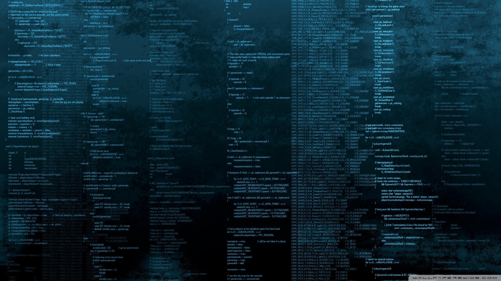

BLOG
Musings of a CS Nerd.


Odometry is an essential part of robot navigation and planning. Over the years several methods in computer vision have been developed to retrieve odometry information from the visual data. This tutorial discusses some 'state-of-the-art' approaches for performing visual odometry whilst simultaneously giving a beginner the basic idea behind it.
Pose graph optmization is an essential part of visual SLAM as well as visual odometry. However windowed pose graph optimization is a variant of the general one, (commonly used in visual odometry) which optimizes the pose graph over the last few frames to minimise the drift accumulated.